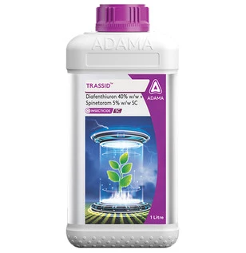

Technical Name: Diafenthiuron 40% w/w + Spinetoram 5% w/w SC
Major Crops: Cotton, Chilli
Mode of action: Effective against sucking pests. Unique mixture with dual mode of action. Rain fastness. Differentiated solution for resistance management. Long duration of control.
Target Pest: Thrips, Whiteflies
Presentation Available: 100ml, 250ml, 500ml, 1ltr
Company: Adama